Generación de código
- Su objetivo es traducir todas las instruccines de la representación intermedia al lenguaje objetivo (ensambladdor).
- Asignar espacio para variables, arreglos, etc.
- Respetar las convenciones del lenguaje:
- Llamadas a funciones.
- Uso de registros (temporales, argumentos, etc.)
- Entre otras cosas.
Generación de código
__________ __________
| | | |
| IRT |--- Intermediate Code ---> | Code Gen |--> Target Code
|__________| |__________|
Recordatorio de CCIII
------------------
| |
| |
| |
| Memoria |
| |
| |
| |
|------------------|
| | |
| Regs. | ALU |
| | |
|------------------|
| Unidad de Control |
------------------
Memoria
- Direccionamiento plano.
- Organizado en words.
- Direccionado por bytes.
- Utilizado para almacenar:
- El programa a ejecutar
- Variables
- Stack
- Heap
Memoria
------------------
| |
| Stack | - Locales y parametros
| |
|------------------|
| || |
| \/ |
| |
| /\ |
| || |
|------------------|
| |
| Heap | - Campos y arreglos
| |
|------------------|
| Codigo |
------------------
Registros
- Load/Store
- Operaciones únicamente entre registros.
- Los datos se cargan primero a registros.
- Los resultados se escriben de regreso a memoria.
- Muy rápidos.
- Limitados en cantidad.
ALU
- Arithmetic and Logic Unit.
- Ejecuta la mayoria de operaciones.
- Utiliza la forma:
- OP Rd Rs Rt
- Soporta:
- Operaciones aritméticas (add, sub, mul)
- Operaciones lógicas (and, or, sll)
- Operaciones de comparación (seq, slt, sge)
- Algunas operaciones pueden lanzar excepciones:
- Overflow/Underfow
- NaN
- Notación con y sin signo.
Unidad de Control
- Encargado de administrar la secuencia de instrucciones.
- Ejecución de instrucciones
- Obtener la instrucción de memoria.
- Decodificación.
- Ejecución.
- Incrementar el PC.
Unidad de Control
- Saltos incondicionales:
- Obtener la instrucción de memoria.
- Decodificación.
- Obtener dirección del salto (de una etiqueta o un registro).
- Actualizar PC.
Unidad de Control
- Saltos condicionales:
- Se ejeccuta un test, si es exitoso se calcula el salto, de lo contrario se obtiene la siguiente instrucción.
- Instrucciones de la forma brelop Rs Rt label.
- relop puede ser eq, lt, gt, ge, ne, le.
Unidad de Control
- System calls:
- Codificadas manualmente en assembler.
- Para el compilador, son una llamada a una función.
Lo que la máquina entiende...
location data
0x4009b0: 3c1c0fc0
0x4009b4: 279c7640
0x4009b8: 0399e021
0x4009bc: 8f998044
0x4009c0: 27bdffe0
0x4009c4: afbf001c
0x4009c8: afbc0018
0x4009cc: 0320f809
0x4009d0: 2404000a
0x4009d4: 8fbf001c
0x4009d8: 8fbc0018
0x4009dc: 27bd0020
0x4009e0: 03e00008
0x4009e4: 00001025
Lo que la máquina entiende...
location data assembly instruction
main:
[test.c: 3] 0x4009b0: 3c1c0fc0 lui gp,0xfc0
[test.c: 3] 0x4009b4: 279c7640 addiu gp,gp,30272
[test.c: 3] 0x4009b8: 0399e021 addu gp,gp,t9
[test.c: 3] 0x4009bc: 8f998044 lw t9,-32700(gp)
[test.c: 3] 0x4009c0: 27bdffe0 addiu sp,sp,-32
[test.c: 3] 0x4009c4: afbf001c sw ra,28(sp)
[test.c: 3] 0x4009c8: afbc0018 sw gp,24(sp)
[test.c: 3] 0x4009cc: 0320f809 jalr ra,t9
[test.c: 3] 0x4009d0: 2404000a li a0,10
[test.c: 3] 0x4009d4: 8fbf001c lw ra,28(sp)
[test.c: 3] 0x4009d8: 8fbc0018 lw gp,24(sp)
[test.c: 3] 0x4009dc: 27bd0020 addiu sp,sp,32
[test.c: 3] 0x4009e0: 03e00008 jr ra
[test.c: 3] 0x4009e4: 00001025 move v0,zero
¿Por qué generar ensamblador en vez de binario?
- Es más símple, al ser texto (símbolos).
- Representa una capa de abstracción lógica.
- Podemos describir una arquitectura en base a su assembler.
- Podemos extender el lenguaje fácilmente (macro assembler).
- No obstante, implica un proceso adicional de ensamblaje y linking.
Lenguaje Ensamblador
- Código reposicionable:
- Direcciones virtuales.
- Direccionamiento real se calcula en tiempo de linking.
- Permite compilación separada.
- Código absoluto:
- Direcciones hard-coded.
- Implementación directa.
- Inflexible, dificulta recargar el código generado.
Lenguaje Ensamblador
item:
.word 1
.text
fib:
subu $sp, 40
sw $31, 28($sp)
sw $4, 40($sp)
sw $16, 20($sp)
# if(n == 0) return 0;
lw $14, 40($sp)
bne $14, 0, $32
move $2, $0
b lab2
lab1:
lw $15, 40($sp)
bne $15, 1, $33
li $2, 1
b lab1
Convenios
Generación de código
Memoria
------------------ 0x7fffffff
| |
| Stack | - Locales y parametros
| |
|------------------|
| || |
| \/ |
| |
| /\ |
| || |
|------------------|
| |
| Heap | - Campos y arreglos
| |
|------------------|
| Text |
|------------------| 0x40000000
| Reserved |
------------------
Memoria
- Stack:
- Crece hacia abajo (restando).
- Organizado en frames.
- Utilizado para variables locales y parámetros.
- Heap:
- Utilizado para campos y objetos (arreglos).
- Organizado en listas.
- Ojo con problemas de accesos no alineados.
Paso de argumentos
- Varias formas:
- Por referencia.
- Por valor.
- Cómo los enviamos:
- Utilizado el stack.
- Utilizando registros.
- O una combinación de ambos.
Registros
| 0 | zero | Hard-wired to zero |
Registros
Dirección de retorno de una función, cargado por jal y jalr.
| 0 | zero | Hard-wired to zero |
| 31 | ra | return address |
Registros
Punteros para manejo de memoria y el stack.
| 0 | zero | Hard-wired to zero |
| 28 | gp | Global pointer |
| 29 | sp | Stack pointer |
| 30 | fp | Frame pointer |
| 31 | ra | return address |
Registros
Resevado para el ensamblador, útil para instrucciones compuestas.
| 0 | zero | Hard-wired to zero |
| 1 | at | Assembler temporal |
| 28 | gp | Global pointer |
| 29 | sp | Stack pointer |
| 30 | fp | Frame pointer |
| 31 | ra | return address |
Registros
Utilizados para retornar el resultado de expresiones de funciones.
| 0 | zero | Hard-wired to zero |
| 1 | at | Assembler temporal |
| 2 - 3 | v0 - v1 | Expression eval, and return results. |
| 28 | gp | Global pointer |
| 29 | sp | Stack pointer |
| 30 | fp | Frame pointer |
| 31 | ra | return address |
Registros
Utilizados para argumentos, si no hay, se puede usar como temporales. Si necesitan más de 4, se usa el stack.
| 0 | zero | Hard-wired to zero |
| 1 | at | Assembler temporal |
| 2 - 3 | v0 - v1 | Expression eval, and return results |
| 4 - 7 | a0 - a3 | Arguments 1 to 4. |
| 28 | gp | Global pointer |
| 29 | sp | Stack pointer |
| 30 | fp | Frame pointer |
| 31 | ra | return address |
Registros
Temporales, el convenio asigna la responsabilidad de preservarlos a quien corresponda.
| 0 | zero | Hard-wired to zero |
| 1 | at | Assembler temporal |
| 2 - 3 | v0 - v1 | Expression eval, and return results |
| 4 - 7 | a0 - a3 | Arguments 1 to 4. |
| 8 - 15 | t0 - t7 | Temporary (caller saved) |
| 16 - 23 | s0 - s7 | Saved temporary (callee saved) |
| 24 - 25 | t8 - t9 | Temporary (caller saved) |
| 28 | gp | Global pointer |
| 29 | sp | Stack pointer |
| 30 | fp | Frame pointer |
| 31 | ra | return address |
Al llamar a un procedimiento
- Se obtiene un nuevo stack frame.
- El frame almacena parámetros y variables locales.
- El caller debe guardar:
- Registros caller saved (tX).
- Parámetros (aX).
- Return address (ra).
- Callee debe guardar:
- Dirección inicial del stack pointer.
- Registros callee saved.
Stack frame
- Dirección de los argumentos 5 a n es (n-4)*4+$fp.
- Variables locales son offsets negativos de $fp.
-
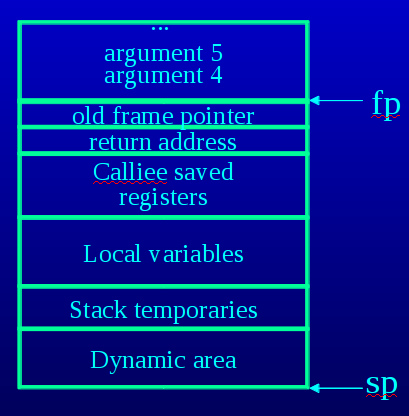
Stack frame
- Al llamar a un procedimiento el caller debe:
-
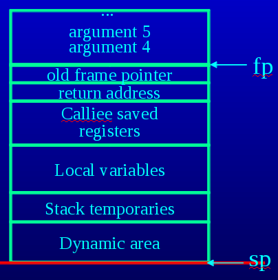
Stack frame
- Al llamar a un procedimiento el caller debe:
- Push de los tX necesarios al stack.
-
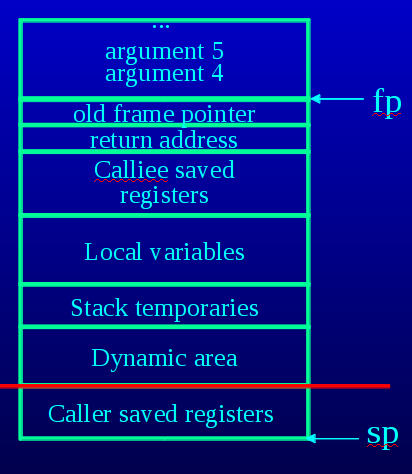
Stack frame
- Al llamar a un procedimiento el caller debe:
- Push de los tX necesarios al stack.
- Cargar argumentos 1 a 4 en a0 a3.
- Cargar resto de argumentos al stack.
-
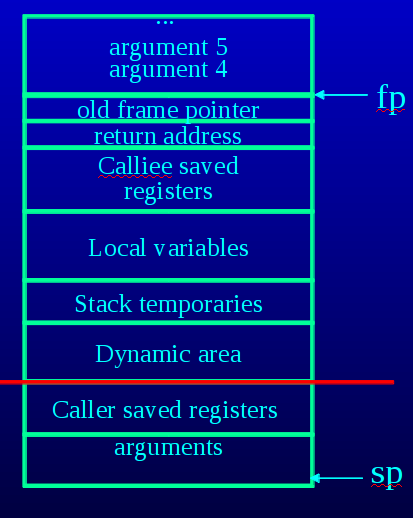
Stack frame
- Al llamar a un procedimiento el caller debe:
- Push de los tX necesarios al stack.
- Cargar argumentos 1 a 4 en a0 a3.
- Cargar resto de argumentos al stack.
- Saltar a la función (jal o jalr).
Stack frame
- Al iniciar el callee debe:
Stack frame
- Al iniciar el callee debe:
- Copiar el contenido de $sp a $fp.
-
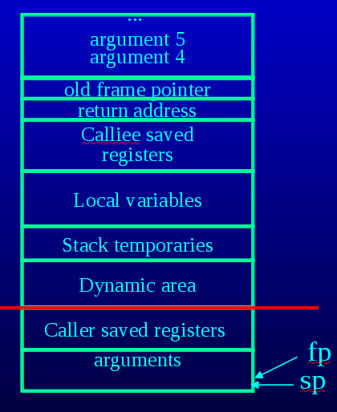
Stack frame
- Al iniciar el callee debe:
- Copiar el contenido de $sp a $fp.
- Push $fp al stack.
-
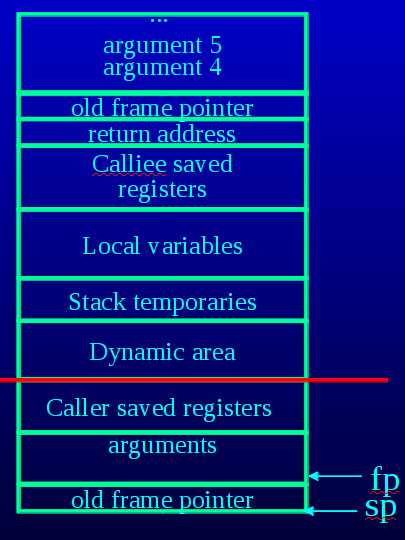
Stack frame
- Al iniciar el callee debe:
- Copiar el contenido de $sp a $fp.
- Push $fp al stack.
- Push $ra al stack.
-
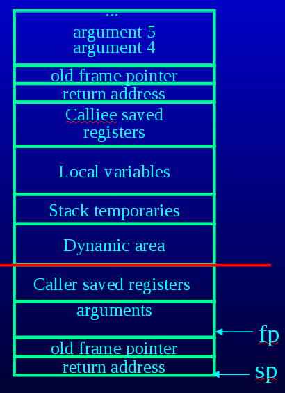
Stack frame
- Al iniciar el callee debe:
- Copiar el contenido de $sp a $fp.
- Push $fp al stack.
- Push $ra al stack.
- Push los sX necesarios al stack.
-
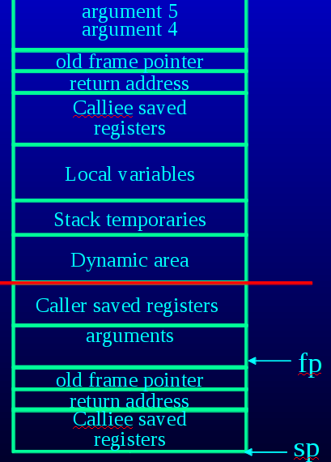
Stack frame
- Al iniciar el callee debe:
- Copiar el contenido de $sp a $fp.
- Push $fp al stack.
- Push $ra al stack.
- Push los sX necesarios al stack.
- Reservar espacio para variables locales.
-
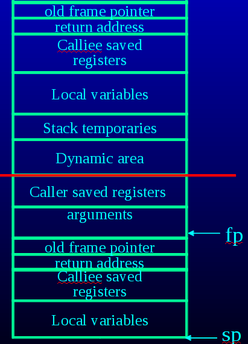
Stack frame
- Al iniciar el callee debe:
- Copiar el contenido de $sp a $fp.
- Push $fp al stack.
- Push $ra al stack.
- Push los sX necesarios al stack.
- Reservar espacio para variables locales.
- Ejecutar...
Stack frame
- Al final el callee debe:
Stack frame
- Al final el callee debe:
- Cargar valores de retorno a $v0 y $v1.
Stack frame
- Al final el callee debe:
- Cargar valores de retorno a $v0 y $v1.
- Liberar espacio para variables locales.
Stack frame
- Al final el callee debe:
- Cargar valores de retorno a $v0 y $v1.
- Liberar espacio para variables locales.
- Restaurar los registros sX del stack.
Stack frame
- Al final el callee debe:
- Cargar valores de retorno a $v0 y $v1.
- Liberar espacio para variables locales.
- Restaurar los registros sX del stack.
- Restaurar $ra del stack.
Stack frame
- Al final el callee debe:
- Cargar valores de retorno a $v0 y $v1.
- Liberar espacio para variables locales.
- Restaurar los registros sX del stack.
- Restaurar $ra del stack.
- Restaurar $fp del stack.
-
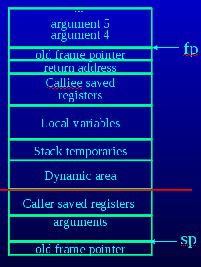
Stack frame
- Al final el callee debe:
- Cargar valores de retorno a $v0 y $v1.
- Liberar espacio para variables locales.
- Restaurar los registros sX del stack.
- Restaurar $ra del stack.
- Restaurar $fp del stack.
- Ejecutar jr $ra para regresar al caller.
-
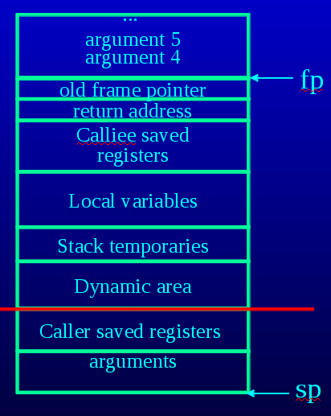
Stack frame
- Al regresar, el caller debe:
Stack frame
- Al regresar, el caller debe:
- Descartar los argumentos en el stack.
-
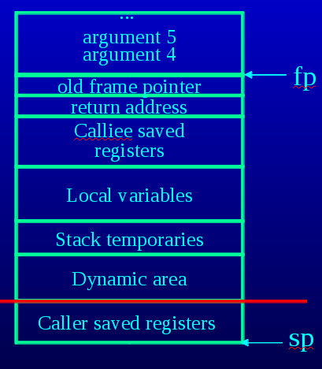
Stack frame
- Al regresar, el caller debe:
- Descartar los argumentos en el stack.
- Restaurar los registros tX del stack.
-
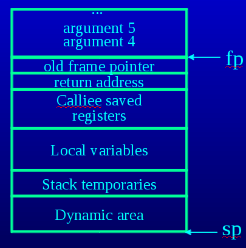
Stack frame
- Al regresar, el caller debe:
- Descartar los argumentos en el stack.
- Restaurar los registros tX del stack.
- Continuar...
Generación de expresiones
- x = y op z:
- Seleccionar un registro para cargar el valor de y, digamos $t0:
- Si y está en otro registro ($s0): add $t0 $s0 $0
- Si y es un inmediato: li $t0 25
- Si y está en memoria (apuntado por $s0): lw $t0 0($s0)
- Si y está en memoria (apuntado por un símbolo): la $t0 label
- Hacer lo mismo para z, digamos al registro $t1.
- Selecccionar un registro para guardar x, digamos $t3.
- Operar y y z: op $t3 $t0 $t1
- Seleccionar un registro para cargar el valor de y, digamos $t0:
Generación de expresiones
- Este algoritmo es muy simple, lo cual lo hace fácil de implementar.
- Se debe tener cuidado con el uso de los registros, los temporales son muy limitados (18).
- Es posible que encontremos instrucciones sin un equivalente directo, se deben expandir a varias instrucciones.
- No es muy eficiente, y puede derivar en muchas operaciones con cero, o copias de constantes innecesarias.
- Para esto se aplicarán optimizaciones, mejorando el programa generado.
- Se prefiere tener un generador de código muy, muy simple.